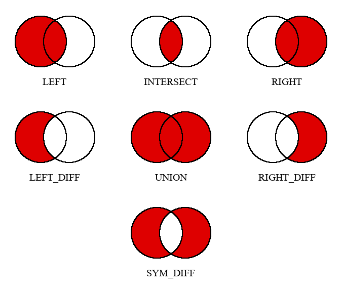

Introduction
RapidVault is a new relational database management system, and its main goal is to create a strong alternative to currently the most commonly used database engines. The source code is distributed under MIT license, and can be freely viewed there.
This project was mainly created to expand my programmer's portfiolio, but quickly ascended to a full database management system. Currently in progress, written in modern C++. Note that this pre-release version is likely not bug-free.
For now, due to the lack of saving and loading databases, this version functions as a sandbox. Full version will be released along with other features, that are described in 'Development plans'.
Database
RapidVault pre-release 1.0 operates on only one database, temporarily named "rapidvault_database". Every database mathematically can hold up to 264 tables, but there has been no tests nor benchmarks to check the true maximum amount.
Every database can get its structure displayed. It shows the database's name, tables' and their columns' names. This function also counts tables and their respective rows. The database however can also be renamed, but its name currently has no real impact on any of the functionalities.
rv::database db( "example" );
db.display();
db.rename( "my_database" );
To manipulate tables by hand (without queries), there are provided
funtions to do so. Both create_table() and rename_table()
return an index to the table, while delete_table() returns the new amount
of tables in database.
std::string table_name = "example";
db.create_table( table_name );
db.rename_table( table_name, "new_example" );
db.delete_table( "new_example" );To get the pointer to a specified table, you'll need to use
uint64_t index = db.get_table_index( "example" );
table* pointer = db.get_table_pointer( index );
Every time a query is processed, the database recieves an info about
potential errors or warnings. Class rv::database has a member class
rv::error_handler check;, so to properly display the issues, use
db.check.print_errors();
db.check.print_warnings();
RapidVault uses its very own query language called RVquery, which
will be discussed later. Queries are called using rvquery().
It processes a string, and if evaluated correctly displays results and
returns true. Otherwise it'll return false.
std::string query = ...;
db.rvquery( query );This function in fact takes two arguments, the second being the display format.
rv::DISPLAY_TYPE::NORMAL- by defaultrv::DISPLAY_TYPE::RAW- values separated by space, rows in following linesrv::DISPLAY_TYPE::JSON- placed by rowsrv::DISPLAY_TYPE::JSON_INVERTED- placed by columnsrv::DISPLAY_TYPE::NONE
Table
The rv::table class per se can be declared without the database.
Even though queries are reserved for databases, table defines following functions that
make it serviceable.
For columns manipulating:
rv::table t( "my_own_table" );
t.create_column( "other_table" ); // returns its index
t.create_column( "another_table", 0 ); // inserts at given index and returns it
uint64_t column_index = t.get_column_index( "other_table" );
t.rename_column( column_index, "new_name" ); // returns its index
t.delete_column( column_index ); // returns new amount of columns
rv::table new_t( "copy_of_my_own_table" );
new_t.copy_structure( &t ); // copies the structure of other table (column names)
For rows manipulating:
rv::cell_data data1 = "example";
rv::cell_data data2 = 10;
uint64_t index1 = t.create_row(); // creates an empty row
uint64_t index2 = t.create_row(); // and returns its index
// change_row() takes as parameters firstly the row index, column index (or its name) and lastly the data
t.change_row( index1, column_index, data1 );
t.change_row( index2, column_index, data2 );
data = t.get_row( index1, column_index ); // data can be fetched the same way
t.delete_row( index1 ); // returns new amount of rowsNote that these functions have no properties when there are no columns in a table.
Lastly, the table can be displayed using display(), which takes a
rv::DISPLAY_TYPE as a parameter, described in the
'Database' section.
t.display( rv::DISPLAY_TYPE::JSON );Rows and columns
Mentioned in the previous section rv::cell_data type is actually an std::variant (C++17):
typedef std::variant<int_fast64_t, long double, std::string> cell_data;This allows the database to be dynamically typed. The columns have no specified type, and can be switched at any point of runtime. Note that there is no primary key, because there are no relationship declarations between tables. All of the queries are evaluated using joins, where any column can be used as a key.
Displaying formats
Let's discuss displaying formats. Starting with rv::DISPLAY_TYPE::NORMAL
o-----------o-------------o
| cities.id | cities.name |
+-----------+-------------+
| 0 | Poznan |
+-----------+-------------+
| 1 | Warszawa |
+-----------+-------------+
| 2 | Gdansk |
+-----------+-------------+
| 3 | Krakow |
+-----------+-------------+
This example shows some of the cities in Poland from table cities with columns
id and name.
Another displaying option is rv::DISPLAY_TYPE::RAW
0 Poznan
1 Warszawa
2 Gdansk
3 Krakow
Same table is displayed with pure data separated by spaces. It has no special separators, making it universal when porting data.
There is no problem with converting query results to rv::DISPLAY_TYPE::JSON and
rv::DISPLAY_TYPE::JSON_INVERTED. The differences are simple: one has data placed by rows,
other has data placed by columns.
{
0: [ 0, "Poznan" ],
1: [ 1, "Warszawa" ],
2: [ 2, "Gdansk" ],
3: [ 3, "Krakow" ],
}
or
{
"cities.id": [ 0, 1, 2, 3 ],
"cities.name": [ "Poznan", "Warszawa", "Gdansk", "Krakow" ],
}
Lastly, there is a rv::DISPLAY_TYPE::NONE, which really displays no results.
Naming rules
Even though database, table and column can be named using spaces, there is no actual way to refer to them with RVquery. This language divides input into tokens (anything separated by whitespace), and then analyzes it. The formal and correct way to do this would be to remove the spaces from the name and use an underscore. The quote character is reserved to data (rows).
It is strongly discouraged to use for example "1name" or "!test%" e.t.c. The names shall not include any other special characters or numbers, although it technically is allowed to use them. This advise was introduced due to the direction of the project's development, which may cause future conflicts with this type of names.
To forbid overwriting, every join temporarily renames columns' by appending their table name followed by a dot. Currently, there is no method to prevent creating columns with the same names (and databases along with tables).
RVquery
One of the main ideas of the RapidVault was to abandon original SQL, along with other languages like PRQL, GraphQL or WebAssembly e.t.c. RVquery is actually derived from the SQL, but it is processed a little differently. The project aims to moderately move away from the similarity to SQL, but for now the keywords are almost identical.
It is worth mentioning that the query won't display any results if processed incorrectly ( there were errors during evaluation ).
Operation table
Let's start with the concept of the operation table. The query is built gradually, which means that every instruction is evaluated line by line. The database emulates a new table, on which the operating query is processed. For example:
SELECT any_table_name;will display the full content of table_name. Then by adding
SELECT any_table_name;
JOIN any_table_name.id_column LEFT id another_table;it will show two tables joined. In fact, the first instruction copies original table to the operating one, and then the second instruction appends columns from the specified table (and changes their names).
The JOIN instruction uses first column from already existing table (operating table), thus it
already has changed name, while after LEFT there is a raw column name with table separated by space.
If this seems confusing for now, it will be described in more detail later.
Expressions
For now, due to the simplicity of implementation, RVquery uses RPN (Reverse Polish Notation).
This means that WHERE instruction creates a stack on which the operands and operators
will be pushed. It will be explained later in 'Expressions' section.
Operating queries
Operating queries are such instructions, that do not affect database's tables
at all (also check copying properties of SELECT and JOIN).
They use only operating table to process the query.
SELECT
First thing to do while building a query is to establish a starting table. It flushes the operating table, deleting previous' query results, and copies a given table (specified in the database the query is processed) to operating table.
SELECT table;It will return an error if the specified table doesn't exist or there were no arguments provided.
JOIN
For now, there are two types of joins.
The full instruction scheme looks like this
JOIN main_table_name.key_column RELATION key_column other_table;Where main_table.key_column refers to a column inside
operating table, and key_column refers to a column from other_table.
The RELATION keyword refers to
-
LEFT- all records from the left (operating) table and the matched records from the right (specified) based on provided key columns. -
RIGHT- all records from the right (specified) table and the matched records from the left (operating) based on provided key columns.
Let's say that we have users and cities tables.
First one has city column, and the second has id column,
thus they will be used as our key columns.
SELECT users;
JOIN users.city LEFT id cities;
Table cities has a country column. We can append the
countries table (by id column) to the recently processed operating
table using
JOIN cities.country LEFT id countries;For these tables
o------------o---------------o------------o o-----------o-------------o----------------o o--------------o----------------o
| users.name | users.surname | users.city | | cities.id | cities.name | cities.country | | countries.id | countries.name |
+------------+---------------+------------+ +-----------+-------------+----------------+ +--------------+----------------+
| Krzysztof | Luczka | 0 | | 0 | Poznan | 1 | | 0 | Belgium |
+------------+---------------+------------+ +-----------+-------------+----------------+ +--------------+----------------+
| Herkules | Poirot | 2 | | 1 | New York | 3 | | 1 | Poland |
+------------+---------------+------------+ +-----------+-------------+----------------+ +--------------+----------------+
| Tony | Stark | 1 | | 2 | Spa | 0 |
+------------+---------------+------------+ +-----------+-------------+----------------+
| Jack | Sparrow | 3 |
+------------+---------------+------------+
the result should look like this
o------------o---------------o-------------o----------------o
| users.name | users.surname | cities.name | countries.name |
+------------+---------------+-------------+----------------+
| Krzysztof | Luczka | Poznan | Poland |
+------------+---------------+-------------+----------------+
| Herkules | Poirot | Spa | Belgium |
+------------+---------------+-------------+----------------+
| Tony | Stark | New York | 0 |
+------------+---------------+-------------+----------------+
| Jack | Sparrow | 0 | Belgium |
+------------+---------------+-------------+----------------+
Let's analize these
- The first join merges
userswithcities. - There is no city defined for Sparrow, thus the zero is inserted.
- The second join merges
citieswithcountries. - There is no country for New York, thus the zero is inserted.
-
Because of the Sparrow's zero inserted in
cities.name, there is "Belgium" inserted (its index is also equal to 0). - Note, that there are no key columns - query automatically omits them.
There is no prevention for this behaviour in pre-release 1.0, so the users are advised to carefully design their databases.
This instruction will return an error when the starting table wasn't established, the columns' or tables' names are invalid, there were not enough arguments or there was an unexpected instruction call (invalid relation type).
ALIAS
If we want to make any column name more pleasurable to the eye, we can rename it.
ALIAS column_name new_column_name;This instruction will return an error when the column's name was invalid or there were not enough arguments.
PICK
If further evaluations or results need only selected columns, use
PICK column_name1 column_name2 column_name3 ...;It discards every column other than specified from the operating table. This instruction takes any amount of arguments, and returns no error when any column's name is invalid. However it returns an error when given no arguments.
WHERE
Whenever we want to select only specified rows, we will use
WHERE expression;For each row in the operating table it calculates the result, that usually should be represented by true or false values (in fact, false is equal to zero, and true is anything else). If the expression is evaluated to be false, the row is discarded. Correct use of this instruction is explained in 'Expressions' section.
It returns an error when the starting table wasn't established or there were not enough arguments. Additionally, it returns a warning whenever there was a type mixup (comparing string to number e.t.c.) or division by zero.
PUSH
Sometimes there is a need to insert a new row just for the operation table. To do so, use
PUSH value1 value2 value3 ...;It creates a new row in the operation table, and whenever there are given less values than columns, it will set them to zero. This instruction takes any amount of arguments, and returns an error when given no arguments.
Manipulating queries
Manipulating queries are such instructions, that affect database's tables. They are used to design databases, tables and their content.
INSERT
To insert a new row to a specified table, use
INSERT table_name value1 value2 value3 ...;It creates a new row in the specified table, and whenever there are given less values than columns, it will set them to zero. This instruction takes any amount of arguments, and returns an error when given no arguments or the table names is invalid.
CREATE
CREATE TABLE
To create an empty table with specified name, use
CREATE TABLE table_name;CREATE COLUMNS
To add new columns to an existing table, use
CREATE COLUMNS table_name column_name1 column_name2 column_name3 ...;
The CREATE instruction will return an error when table's name
is invalid, there were not enough arguments or there was an unexpected
instruction call (invalid instance type).
Expressions
Understanding stack
Expressions in RVquery for some might be a hard nut to crack. But let's hop right into them.
WHERE cities.inhabitants 1000 > cities.region "Wielkopolska" == &&;For someone, who never had touched a topic of inverse notation, this might look totally unreadable and abstract. Normally, the expression would look like this
(cities.inhabitants > 1000 && cities.region == "Wielkopolska")This looks more readable, now we know that we will be searching for cities that have more than a thousand inhabitants and are located in the Wielkopolska.
But for now due, to the implementation simplicity, WHERE uses Reverse Polish Notation,
sometimes called the postfix notation. It was created by an Australian scientist Charles Hamblin,
and named to honour the original Polish Notation (the prefix notation) invented by a Polish
scientist Jan Łukasiewicz.
WHERE instruction operates on a stack - every operand is pushed to the stack, and then when
occuring an operator, it gets the top two values and pushes their caluclated value. Let's say
that we're currently at a row that describes a city with 1500 inhabitants and is located in Świętokrzyskie.
For this row, instruction will swap cities.inhabitants with 1500 and cities.region
with "Świętokrzyskie".
1500 1000 > "Świętokrzyskie" "Wielkopolska" == &&So let's evaluate. This is an empty stack.
- At first we push two values - 1500 and 1000
- Next, we're at
>operator, so we need to check whether the older value is bigger than the younger, and return a proper boolean. In this case 1500 is bigger than 1000, so - Now we're pushing the "Świętokrzyskie" and "Wielkopolska" on the stack.
- Similarly, we compare the two top values, the older and younger one, and return the proper evaluation.
- The last operator is
&&, so we evaluate this with ourtrueandfalse.
[ , , , ][ 1500 , 1000 , , ][ true , , , ][ true , "Świętokrzyskie" , "Wielkopolska" , ][ true , false , , ][ false , , , ]Quick conclusion - this row does not match our expression, that means it will be discarded. Same process is done to every row in an operation table, to eliminate the inconsonant rows.
Strings and numbers
Due to the RapidVault properties, there is a possibility to evaluate expressions when the operands are strings. Mathematical operators do not go with strings, thus, RapidVault defines behaviours to handle these possibilities:
- string <=> number
+operator will treat any number like a string and will concatenate it to the second operand- any other operator will replace string with its length
- string <=> string
+will concatenate strings==and!=will compare true strings' values- any other operator will replace strings with their lengths
Limitations
Currently, RVquery supports +, -, *, /, %,
+, +, <, <=, >, >=,
== and != operators.
Errors and warnings
Whenever an error occurs during query processing, it disables the result display. To view the errors, use database's error handler.
rv::database db;
db.rvquery( /* some query */ );
db.check.print_errors();
Built-in class rv::error_handler check; is cleared every query call. It catches every
issue and the instruction at which it was observed. The same goes with warnings, except they do not stop
the query from processing, and the result is forced.
db.check.print_warnings();Errors
Currently there are 6 different types of errors:-
rv::ERROR_TYPE::INVALID_EXPRESSION_FORMAT- stack doesn't have any value
- stack has too many values
- invalid operator
- invalid operand
- any other issue with
WHEREinstruction
-
rv::ERROR_TYPE::INVALID_COLUMN_NAME- column does not exist in the database
- column's name has a typo
- column's name didn't match the rules
- column's name didn't include its table name followed by a dot
-
rv::ERROR_TYPE::INVALID_TABLE_NAME- table does not exist in the database
- table's name has a typo
- table's name didn't match the rules
-
rv::ERROR_TYPE::NOT_ENOUGH_ARGUMENTS- an instruction takes more arguments
- a semicolon in wrong place
- any other type of typo in query
-
rv::ERROR_TYPE::NO_STARTING_TABLE- did not use the
SELECTinstruction - operating table has no columns
- did not use the
-
rv::ERROR_TYPE::INVALID_INSTRUCTION- non existing instruction or a typo
- invalid relationship in
JOIN - invalid instance in
CREATE
Warnings
Currently there are 2 different types of warnings:-
rv::WARNING_TYPE::DIVISION_BY_ZERO- division by non existing or empty row
- division by zero value
-
rv::WARNING_TYPE::TYPES_MIXUP- comparing a number to a string
- doing math operators on strings
Development plans
The list of features that are planned to be implemented until next release:DELETEandUPDATEmanipulating queries-
DISTINCT,ASCENDING,DESCENDING,SUM,AVG,MINandMAXqueries -
LEFT_DIFF,SYM_DIFF,RIGHT_DIFF,INTERSECTIONandUNIONrelationship types PUSH ROWandPUSH COLUMNSdistinction- Regular expressions for
WHEREinstruction - Bitshift operators (
<<and>>) support %operator for floating point numbers- Implement database saving (including autosave) and loading
- Migrating from SQL databases to RapidVault
- Raports

Contributors
This project has no other contributors yet. This documentation is current until March 1, 2024 and describes the RapidVault pre-release 1.0 version.
MIT License
Copyright (c) 2024, Krzysztof Łuczka
Permission is hereby granted, free of charge, to any person obtaining a copy
of this software and associated documentation files (the "Software"), to deal
in the Software without restriction, including without limitation the rights
to use, copy, modify, merge, publish, distribute, sublicense, and/or sell
copies of the Software, and to permit persons to whom the Software is
furnished to do so, subject to the following conditions:
The above copyright notice and this permission notice shall be included in all
copies or substantial portions of the Software.
THE SOFTWARE IS PROVIDED "AS IS", WITHOUT WARRANTY OF ANY KIND, EXPRESS OR
IMPLIED, INCLUDING BUT NOT LIMITED TO THE WARRANTIES OF MERCHANTABILITY,
FITNESS FOR A PARTICULAR PURPOSE AND NONINFRINGEMENT. IN NO EVENT SHALL THE
AUTHORS OR COPYRIGHT HOLDERS BE LIABLE FOR ANY CLAIM, DAMAGES OR OTHER
LIABILITY, WHETHER IN AN ACTION OF CONTRACT, TORT OR OTHERWISE, ARISING FROM,
OUT OF OR IN CONNECTION WITH THE SOFTWARE OR THE USE OR OTHER DEALINGS IN THE
SOFTWARE.